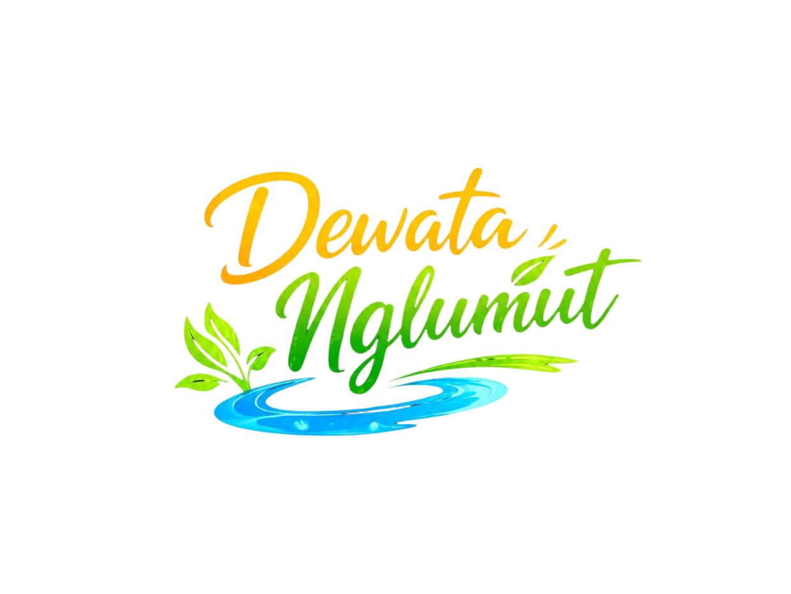

✦ Desa Wisata Nglumut, Magelang
Surga Alam di Kaki
Gunung Merapi
Jelajahi pesona Desa Wisata Nglumut — alam yang asri, manisnya buah salak, wisata Sabo Dam, dan keramahan warga yang tak terlupakan.

Jelajahi pesona Desa Wisata Nglumut — alam yang asri, manisnya buah salak, wisata Sabo Dam, dan keramahan warga yang tak terlupakan.
Geser untuk melihat lebih banyak foto destinasi terbaik Desa Nglumut.
Desa Nglumut terletak di lereng Gunung Merapi, Kecamatan Srumbung, Kabupaten Magelang, Jawa Tengah. Desa ini dikenal dengan keindahan alam pegunungannya, keberadaan Sabo Dam sebagai ikon wisata, serta budaya masyarakat yang masih terjaga. Potensi wisatanya terus dikembangkan melalui kolaborasi warga, pemerintah, dan program KKN mahasiswa.
Desa Nglumut, Kec. Srumbung, Kab. Magelang, Jawa Tengah 56484
Desa Nglumut menyimpan sejarah panjang yang erat kaitannya dengan aktivitas vulkanik Gunung Merapi. Selama berabad-abad, masyarakat desa membangun kehidupan di lereng gunung yang subur, dengan kearifan lokal dalam menghadapi ancaman lahar dan sedimen vulkanik. Kehadiran Sabo Dam menjadi tonggak penting dalam sejarah perlindungan kawasan ini...
Hover kartu untuk melihat detail. Setiap wahana tersedia untuk reservasi.
Reservasi mudah via WhatsApp — isi form dan pesan otomatis langsung terkirim ke pengelola desa wisata.
Update terbaru, foto, dan informasi kegiatan wisata bisa kamu temukan di platform kami.
Desa Nglumut terletak di lereng barat Gunung Merapi dan telah dihuni selama ratusan tahun. Masyarakat desa sejak dahulu kala telah belajar hidup berdampingan dengan aktivitas vulkanik yang intens dari Merapi, salah satu gunung berapi paling aktif di dunia.
Kehidupan warga Nglumut tak lepas dari pengaruh Merapi. Tanah vulkanik yang subur menjadi berkah tersendiri, menghasilkan pertanian yang produktif — terutama salak pondoh, sayur-mayur, dan palawija. Namun di sisi lain, ancaman lahar dan awan panas selalu menjadi bagian dari keseharian masyarakat.
Pasca erupsi besar Merapi, pemerintah membangun infrastruktur Sabo Dam — bendungan pengendali sedimen vulkanik — di sepanjang aliran sungai yang berhulu di lereng Merapi. Sabo Dam di wilayah Nglumut menjadi salah satu yang terpenting dalam sistem perlindungan kawasan, menahan lahar dingin sebelum mencapai permukiman dan lahan pertanian di bawahnya.
Berangkat dari potensi alam yang luar biasa dan keberadaan Sabo Dam sebagai daya tarik unik, warga Nglumut bersama pemerintah desa dan dukungan berbagai pihak mulai mengembangkan kawasan ini sebagai destinasi wisata. Dengan semangat gotong royong, Taman Sabo Dam kini menjadi ikon wisata yang menarik pengunjung dari berbagai penjuru untuk menikmati keindahan alam sekaligus belajar tentang teknologi mitigasi bencana.